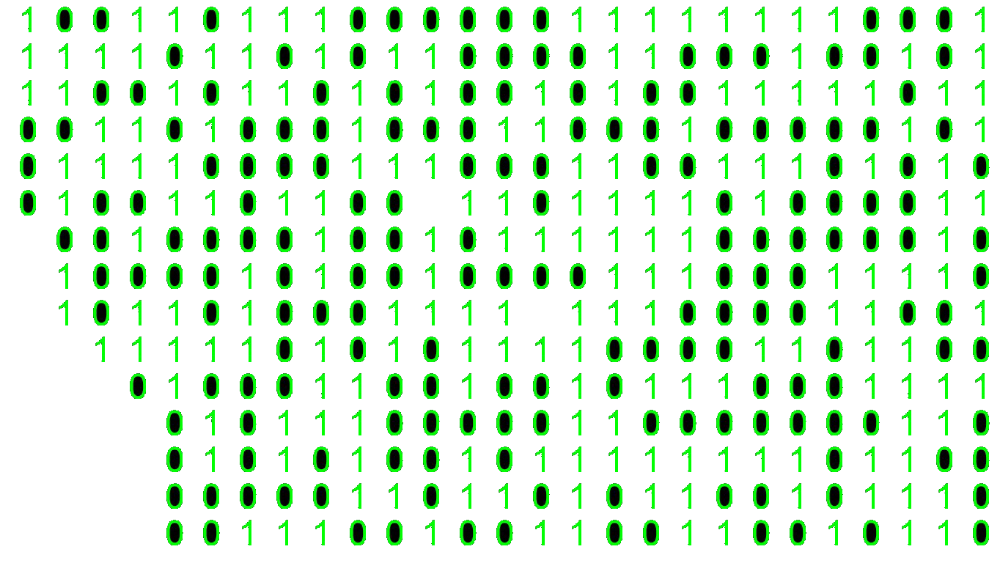
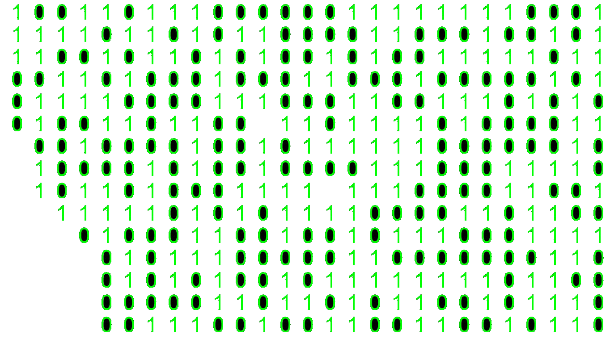
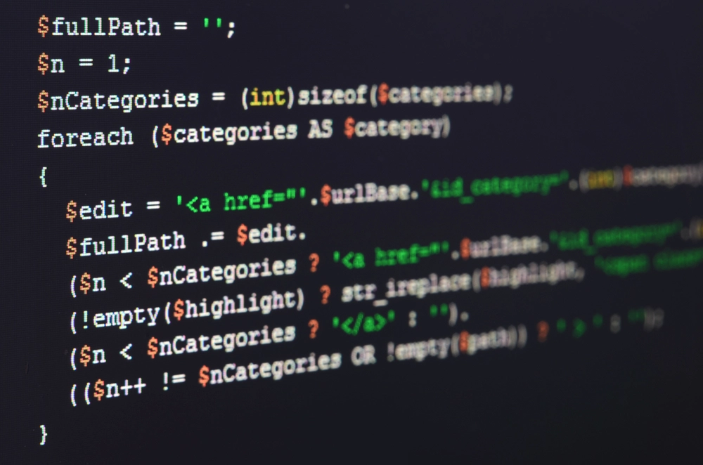

Site Ai
Gestão e Programação de Sistemas Informáticos
 

Técnico de Gestão e Programação de Sistemas Informáticos pode ajudar na formação de:
-Instalação e configuração da manutenção de aplicações informáticas;
-Conceber algoritmos através da divisão dos problemas em componentes;
-Efetuar a manutenção de bases de dados, computadores, redes, periféricos, sistemas operativos e aplicações
informáticas;
-Dominar várias técnicas de programação e linguagens procedimentais e orientadas a objetos,
para desenvolver aplicações Web, desktop e móveis;
Próximo Tópico

. Sistemas Operativos
· Arquiteturas de Computadores
· Redes de Comunicação
· Programação de Sistemas Informáticos
Próximo Tópico
Depois de fazer parte deste curso e ter o conhecimento do mundo das tecnologias podes ser
capaz de te desenvolver como:
· Analista Programador
· Técnico de Redes
· Técnico de Software e Hardware
· Administrador de Sistemas e Redes
· Gestor de Sistemas Informáticos
· Técnico de Sistemas de Exploração
· Vendedor de produtos informáticos
· Formador
· Etc...
Próximo Tópico
· Apetência pela aprendizagem da língua inglesa, para a integração em trabalho de equipa;
· Capacidade para a adaptação dos conhecimentos adquiridos a novas situações;
· Sentido de responsabilidade, iniciativa, criatividade e motivação;
Então acreditamos que poderá desfrutar das experiências neste curso!
Mais Info
 Home
Home